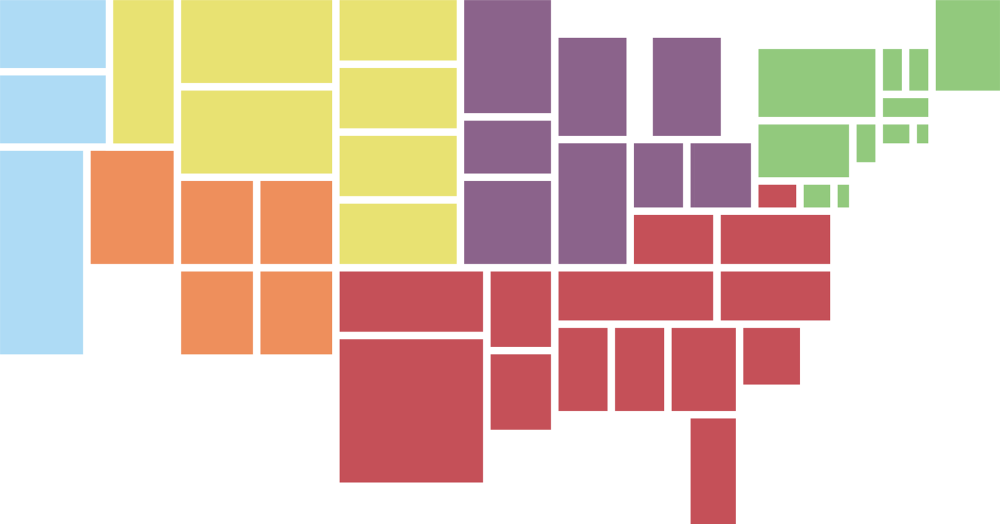
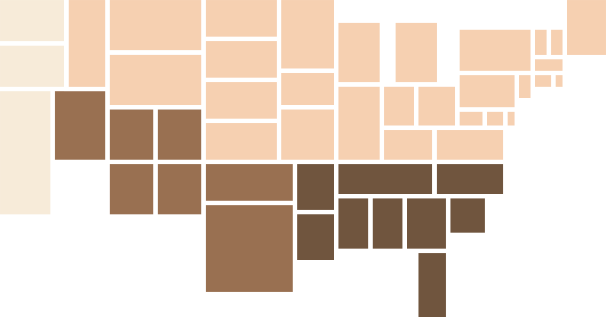
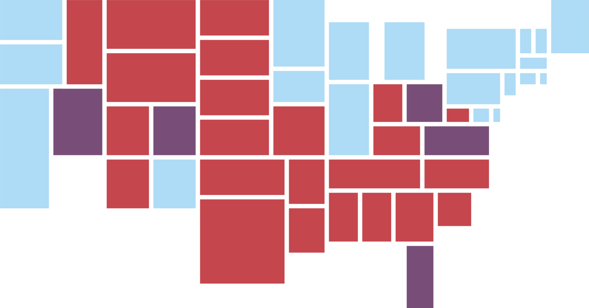
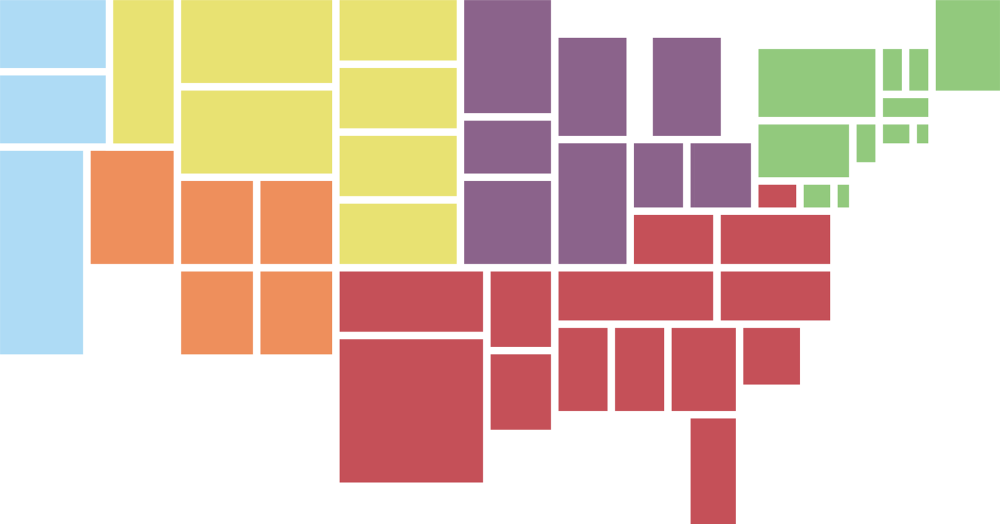
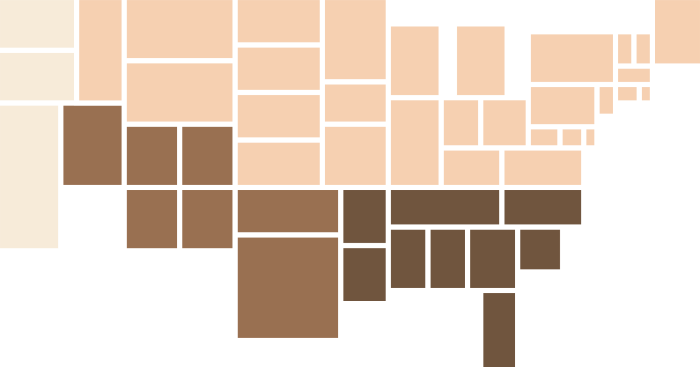
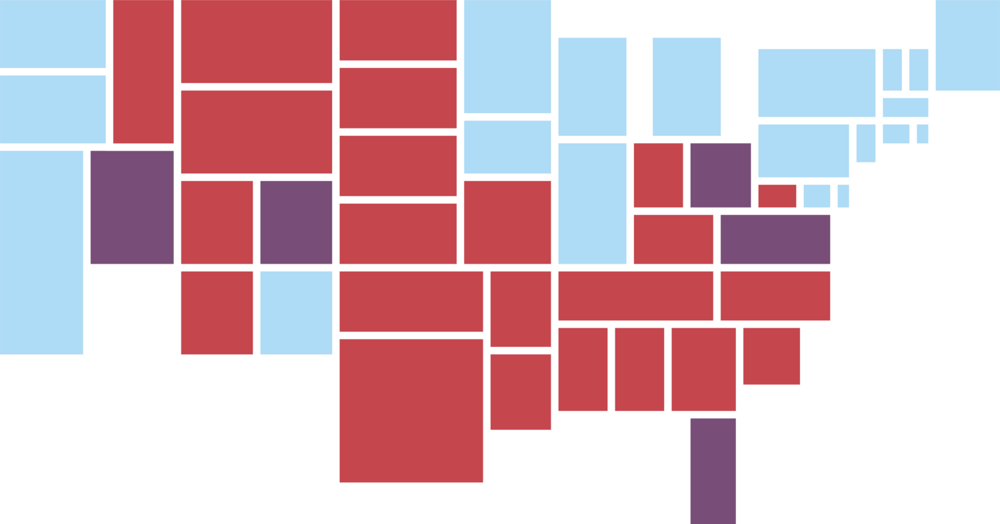

casey penk
u / s / a
 





Designed in Illustrator. Traced loosely over Google Maps, which uses a modified Mercator projection. The benefit of Mercator in this situation is the straightening of parallels, for instance on the northern border, which creates a more grid-like geometry.
August 2015.